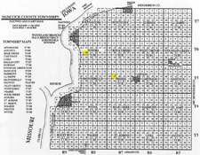

Nauvoo Illinois Map - 1844 |
|  Hancock County Plat - 1844 |
On May 1, 1839, the church purchased the Hugh White farm outside of Commerce, for $5,000. This farm consisted of one hundred thirty-five acres. They also purchased Doctor Isaac Galland's farm west of the White property.
On May 9 Joseph Smith left Quincy with his family and arrived at Commerce, Illinois, on the 10th, where he moved into the small log house on the White farm on the bank of the Mississippi River. This log house was built in 1823 or 1824 by Captain White, and had been occupied by the government agent, for Indians were quite numerous at that time throughout Illinois, and there were some four hundred or five hundred lodges of Sac and Fox Indians in the vicinity, according to the History of Hancock County. Across the river, Iowa was practically unorganized territory. It had been recently a part of the Territory of Wisconsin, but in 1840 it was the Territory of Iowa, including the present States of Iowa, Minnesota, and part of both North and South Dakota. This log house of Captain White's was the first Indian agency established in Illinois.
On June 11 Theodore Turney built a house of logs, in block 147 of the White purchase. Within a year one hundred and fifty houses had been erected by the Saints. On April 21, 1840, the name of the post office was changed to Nauvoo (a Hebrew term signifying a beautiful place). By the first of January, 1841, there was a population of 3,000. By 1844 the number of inhabitants has been variously estimated. Accuracy is not possible, as the settlement was made between the decennial census of 1840 and that of 1850. Usually the number is stated as 25,000, but some old settlers have urged that it was double that. With a church membership of 200,000 to 250,000 and this the principal place and the headquarters of the church, either figure would not be surprising.
The state legislature, December 16, 1840, granted a very liberal charter. The charter made provision for the Nauvoo Legion and the University of Nauvoo. Immediately steps were taken to establish the University of Nauvoo, and by February 15, 1841, James Kelley, A. M., had been elected as president. A building committee was chosen, the work of education pushed energetically, and a faculty chosen. By fall several new members had been added to the faculty, including Orson Pratt, Orson Spencer, and Sidney Rigdon. All matters of education in the city were transferred to the regents of the University of Nauvoo.
On February 4, 1841, the Nauvoo Legion was organized with Joseph Smith as Lieutenant General; J. C. Bennett, Major General; and Wilson Law and D. C. Smith, Brigadier Generals. Such local organizations were common at that time. Nauvoo was on the frontier. Indians resided within the limits of Chicago and elsewhere in Illinois.
General Conferences and public meetings were held in the grove in Nauvoo these first few years, but the necessity of a meeting place was seen, and as early as 1841 the erection of a temple was undertaken. Stone was secured from a quarry on the north side of the city in a river bed. The building was completed far enough to be used in the summer of 1844, though the upper auditorium was not plastered, and the lower auditorium only temporarily arranged for meetings, and only a temporary baptismal font had been placed in the basement.
After the death of Joseph Smith some further work was done on the temple, but it was never completed. The temple was described by Charles Lanman in 1846 as Roman in style, intermixed with Grecian and Egyptian. This building was destroyed by fire in 1848. Its ruins were used as a stone quarry, and many buildings were erected from its remains. This once beautiful temple finally was burned and for a time stood in this manner, a monument to the wrath of persecuting mobs.
Among other buildings, the Nauvoo House was started in 1841, and finished to the top of the windows of the second story, A Masonic Lodge was organized in Nauvoo, and on January 24, 1843, the corner stone of a Masonic Temple was laid. This building was completed April 5, 1844. The lower two stories still stand.
The rapid growth of Nauvoo caused considerable jealousy in the neighboring cities and towns. The Saints were welcomed in 1839 and 1840, but in a few years the critical situation, not only in Hancock County but in the congressional district, became apparent. At first both parties flattered the church officers and the people of the city. This was one reason for the liberal charter, including provision not only for the University of Nauvoo and the legion, but also for a municipal court to which was granted the powers of habeas corpus. This last grant of power was by no means unique. About the same time the city of Alton was granted a municipal court with similar powers, and later the city of Chicago. Still in a short time this fact was made a cause for additional offense against Nauvoo.
In the election of 1843, Mr. Walker, the Whig candidate, had a plurality outside of Nauvoo of some 2,200 or 2,400. Nauvoo, however, cast a vote of over 3,000 in favor of Mr. Hoge; this despite the fact that Joseph Smith had voted for Mr. Walker. From that time on the Whig press knew no limit to its rage and persistently attacked the city of Nauvoo and the church. When in 1844 Joseph Smith reluctantly permitted his name to be proposed as a candidate for president of the United States, the Democrats, finding they had nothing to gain, also turned against the people of Nauvoo. The primary basis of the trouble was undoubtedly political, according to Governor Ford's History of Illinois. Also these New Englanders of the church were abolitionists. Shortly before the Nauvoo trouble, Elijah J. Lovejoy, an abolitionist, was killed in 1837 in Alton, Illinois. He was regarded as a martyr to that cause. As often happens in the case of a large city, thieves in the vicinity many times retreated towards the city, and Nauvoo was unjustly blamed for things with which her citizens were not connected. Governor Ford made a personal investigation and states that the reports were greatly exaggerated, and if the conditions of the community were compared to Saint Louis or many other large cities, the number found guilty would not be so great as in other large cities. It was in this connection that the use of the writ of habeas corpus had given some basis for the spread of false reports.
The rapid growth of the city, the large number of people of one belief, is again illustrated by the fact that the Nauvoo Masonic lodges were much larger than any other in the State and appeared to menace the control of the grand lodge of Illinois. Protests were therefore made, not only from near-by towns but as far away as the lodge of Quincy. The principal basis, however, of the trouble, was political and the spread of false rumors because of prejudice against their religion and belief in revelation, and because of the growing size and power of the city.
The favorable reports of state officials, of ministers and travelers who visited Nauvoo in the 40's, cause us to believe that there was no just basis for these rumors, and the messages and history of Governor Ford definitely state that the rumors were the result of gross exaggeration.
The assassination of Joseph and Hyrum Smith at Carthage on June 27, 1844, followed by the repeal of the charter of the city of Nauvoo on January 13, 1845, led to the decline of the city. For a few years every effort was made to continue to erect substantial edifices, but the continued unrest in the city led to the agreement of many to withdraw from Nauvoo. A large part of these scattered throughout the neighboring States. A few thousand, however, under the leadership of Brigham Young and other members of the Twelve, proceeded in 1846 across Iowa to Kanesville or Council Bluffs, and thence to Utah.